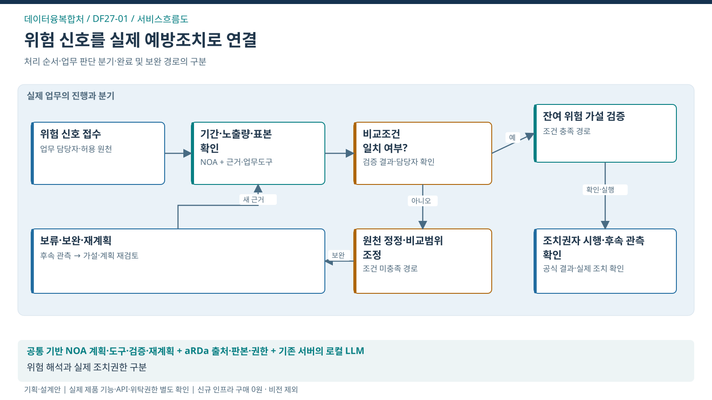

서비스흐름도 · 위험 신호를 실제 예방조치로 연결
이 도식의 목적 · 처리 순서·판단 분기·완료 및 재계획 경로

도식 원본 확대 · SVG · PPT 삽입용 PNG · 1600×900


핵심 해석
- 대표 사건: 위험 신호·비교조건·조치 사건
- 처별 고유 로직: 다중 근거→가설 검증→조치 환류
- 조건 분기: 비교조건 일치 여부? → 충족 시 잔여 위험 가설 검증 / 미충족 시 원천 정정·비교범위 조정
- 공식 결과: 조치권자 시행·후속 관측 확인
- 책임 경계: 위험 해석과 실제 조치권한 구분
- 검증 상태: 실제 제품 기능·API·위탁권한·도입효과 미확정
검증된 위험 신호가 적절한 예방조치 검토와 후속 확인으로 이어지는 시간을 줄임.
- 담당자는 위험 신호·비교조건·조치 사건을 중심으로 근거를 확인하고, AI가 제안한 계획을 검토한 뒤 공식 업무의 결과와 연결함.
- 아래는 제안을 설명하기 위한 화면 구성안임.
설계 예시 · 실제 운영 자료가 아님 · 담당자: 교통데이터 분석 담당자·안전업무 협업 담당자
업무 화면의 핵심 구성
위험 신호 대기함
가상 권역 D-02 / 비교기간 4주
확인한 근거
- 위험행동 건수 증가 집계
- 동기간 주행거리도 증가
- 노선·대상 차량 구성이 변경됨
AI가 준비할 계획
- 비교기간·노출량·표본 변화 확인
- 원인 가설별 추가 집계와 현장 질문 구성
- 안전업무 담당자에게 근거와 대안 인계
담당자가 확인할 결과
조치권자의 수신·실제 시행 여부 및 후속 관측 결과가 연결됨
공식 판단과 승인 권한은 담당자에게 유지
서비스 흐름
| 단계 | 업무와 사용자 행동 | 나오는 결과 |
|---|---|---|
| 1. 대상 확인 | 위험 신호·비교조건·조치 사건와 적용 기준·권한 확인 | 업무 대상·목표·완료조건 |
| 2. 근거 검토 | 원자료의 시점·판본·누락·불일치 확인 | 유효한 근거와 확인할 쟁점 |
| 3. 계획 제안 | 서로 다른 원인 가설과 반대근거를 비교하고 추가 분석·현장 확인·조치 인계·효과 추적을 사건별로 계획 | 검토할 계획·필요 자료·후속 담당자 |
| 4. 전문 검토 | 자료 누락·표본 불일치면 원인 확정을 보류하고 원천 정정 또는 비교범위 축소 | 확정된 조치·보완 또는 보류 이유 |
| 5. 공식 절차 연결 | 근거가 붙은 예방조치 검토 사건 등록 | 접수/등록 결과와 사건의 일치 확인 |
| 6. 효과 확인 | 유효 신호의 검토·조치 연결률 / 오경보로 인한 불필요 조치 / 조치까지 시간 | 업무 완료와 국민·기업 편익을 구분한 결과 |
새 근거가 들어오면 달라지는 처리
주행량 증가가 확인되면 단순 건수 증가의 원인 단정을 철회하고 노출량 보정 분석부터 재계획.
- 노출량 기준 비교를 승인된 집계도구로 수행
- 대상 구성이 같은 집단에서 재검토
- 잔여 징후만 현장 확인·조치 검토로 인계
변경된 근거가 승인된 계획에 영향을 주면 이전 승인을 그대로 사용하지 않음. 필요한 검토 단계로 돌아가 근거·계획·승인판본을 함께 갱신함.
화면별 정보와 책임
| 화면 ID | 화면 목적 | 핵심 정보 | 책임 역할 |
|---|---|---|---|
| DF-UI-01 | 위험 신호 대기함 | 지역/업종 집계키·관측기간·노출량·위험신호·자료시점 | 담당자 |
| DF-UI-02 | 비교조건·반대근거 | 공식 지표 정의·기간/분모·누락률·반대근거·출처판본 | 담당자·전문가 |
| DF-UI-03 | 원인검증·조치계획 | 경쟁 원인가설·추가분석·허용 분석도구·조치 대안·검증조건 | 담당자·전문가 |
| DF-UI-04 | 현업 인계·조치대사 | 조치요청 ID·수신 책임자·인계시각·회신·실제조치·대사상태 | 승인권자·공식 시스템 |
| DF-UI-05 | 예방개입 평가 | 개입 전후 기간·노출량·비교대상·후속 효과·부작용·미해결 | 현업·평가자 |
예외가 발생했을 때
| 발생 상황 | 실제 서비스의 처리 |
|---|---|
| 자료가 없음 | 대상이 없는 상태와 일부 근거 누락을 구분하고 추가 자료를 요청 |
| 근거가 바뀜 | 영향받는 계획과 승인을 표시하고 필요한 단계부터 재검토 |
| 권한이 회수됨 | 자료 조회·실행을 차단하고 권한 있는 담당자에게 인계 |
| 공식 시스템 응답이 없음 | 결과 미확인으로 유지하고 조회로 대사; 무조건 다시 등록하지 않음 |
| 업무 보류·취소 | 새 실행을 막되 기존 외부 결과는 정식 확인·정정 절차로 처리 |
개인 초안·메모는 조직 사건의 공식 근거와 구분함. 담당자가 제출한 자료만 해당 권한 범위에서 연결하며, 공식 지식 반영은 검수를 거침. 본 제안 화면에는 테스트 상태 선택기와 모의 실행 버튼을 두지 않음.
인수·검수 기준
- LLM의 독자적 위험점수 산출, K-패스 지급액 재계산·자동 지급, 개인 원자료 공개은 제공 기능에 포함하지 않음.
- 데이터가 비어 있거나 일부 누락돼도 완료 결과를 추정하지 않음.
- 문서 출처·판본·대상·공식 결과를 추적할 수 있어야 함.
- 성과 측정 조건: 자료 품질 조건을 충족한 신호 사건; 기간·노출량·대상 구성 통제.
- 본문 16px 이상, 키보드 탐색·명확한 포커스·모바일 재배치·200% 확대를 기본 설계로 적용함. 전체 접근성 인증이나 실제 API/제품 검증 완료를 뜻하지 않음.